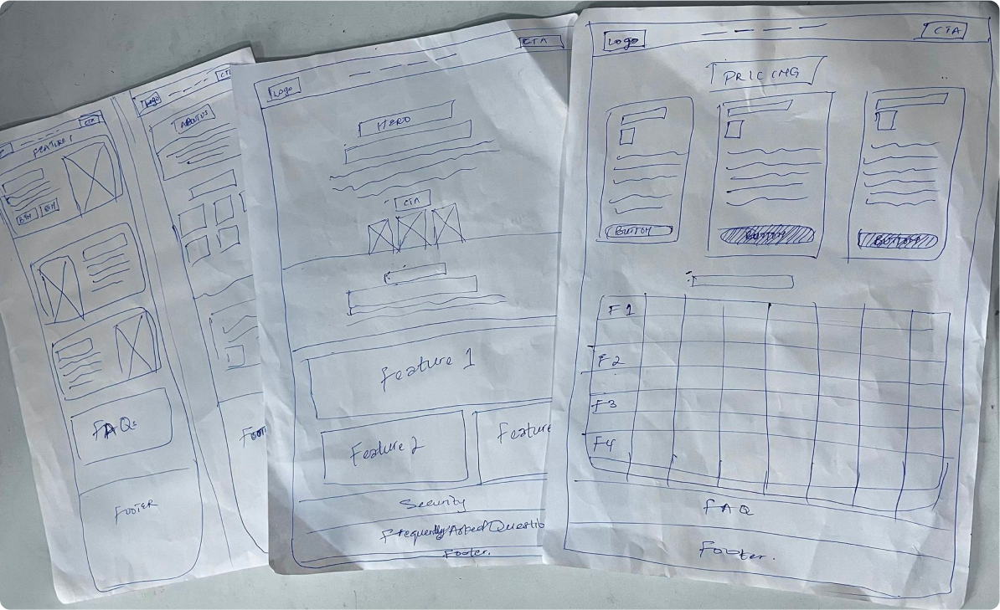
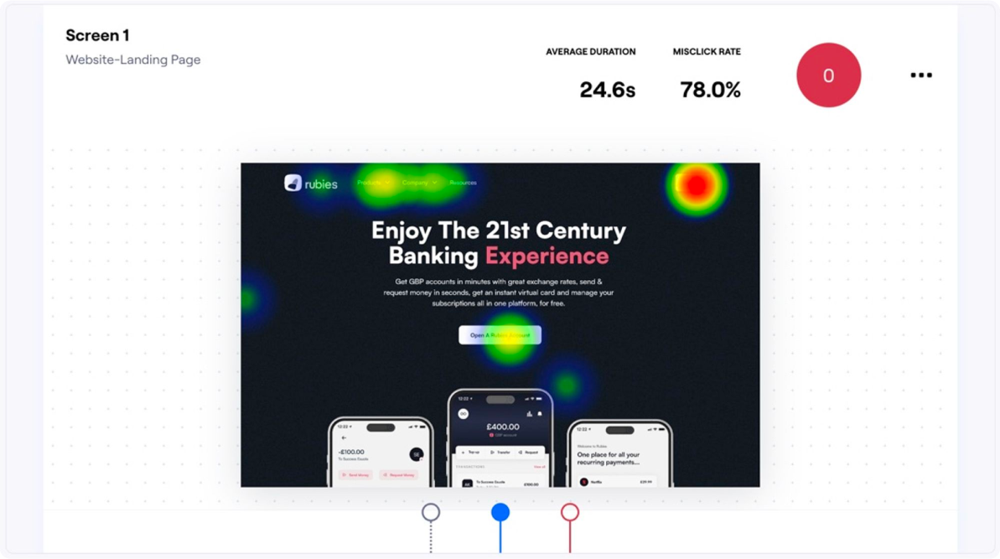

Ideation
Competitors’ Analysis

I considered;
- Design & Layout
- Quick overview of features
Wireframes
I fleshed out wireframes to synthesize the business goals & user needs to give me a clearer vision of what the digital designs should look like
Mid Fidelity Wireframes
I proceeded to mid-fidelity prototype to visualize the content placement and refine the flows and interactions.

High Fidelity Design
To get started on this UI, I built a design system to maintain consistency in line with the brand guideline. This helped me to easily make iterations on the whole mockup. Below are some screens from the design;

Usability Study & Insights
High Fidelity Prototype was tested by asking 9 participants to perform 2 tasks and respond to 2 follow-up questions on Maze.
Although, there were no major usability issues but I noticed that the testers spent an average of 24.6 seconds on the landing page;
I analyzed this situation and uncovered a solution;
- To capture testers' attention, I placed core features in the hero section and animated it to open as they scrolled. Research showed animations effectively grab and retain attention.

Synthesizing User Needs with Business Goals
To help save time in decision-making, I highlighted the benefits of each plans in different cards and placed more emphasis on the plan that would enable them to access multiple cards and by so doing help the business achieve its goal of generating revenue

Reflections
Working on this project reinforced my belief in the importance of conducting research and usability testing.
The research helped me in structuring the design according to the UK standard and
The usability Test helped me identify ways to improve the experience of the website. the business achieve its goal of generating revenue